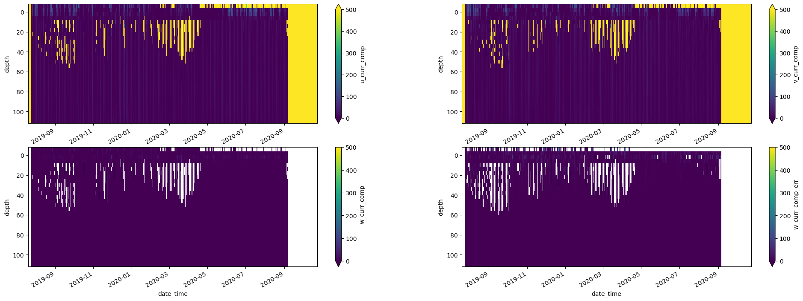
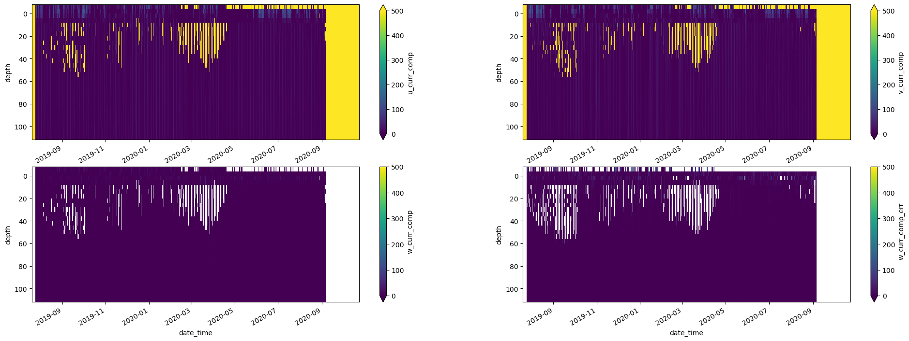

Using EcoFOCIpy to process raw field data¶
Mooring / Timeseries Data¶
Basic workflow for each instrument grouping is as follows:
Parse data from raw files into pandas dataframe
output initial files (pandas->csv) ERDDAP NRT when no meta data is added
Convert to xarray dataframe for all following work (working or final data level):
Add metadata from instrument yaml files and/or header info
ingest metadata from deployment/recovery records or cast logs
process data beyond simple file translate
apply any calibrations or corrections
field corrections
offsets
instrument compensations
some QC were available… this would be old-school simple bounds mostly
adjust time bounds and sample frequency (xarray dataframe)
save as CF netcdf via xarray: so many of the steps above are optional
ERDDAP/CF NRT often if no corrections, offsets or time bounds are applied. Occasionally some meta data is
Working and awaiting QC has no ERDDAP representation and is a holding spot
ERDDAP/CF Final fully calibrated, qc’d and populated with meta information
Plot for preview and QC
preview images (indiv and/or collectively)
manual qc process
Example below is for 4-beam ADCP but the workflow is similar for all ADCP’s with this output format.¶
Future processing of this instrument can be a simplified (no markdown) process which can be archived so that the procedure can be traced or updated
import yaml
import numpy as np
import pandas as pd
%matplotlib inline
import matplotlib.pyplot as plt
import EcoFOCIpy.io.adcp_parser as adcp_parser #<- instrument specific
import EcoFOCIpy.io.ncCFsave as ncCFsave
import EcoFOCIpy.metaconfig.load_config as load_config
import EcoFOCIpy.math.geotools as geotools
The sample_data_dir should be included in the github package but may not be included in the pip install of the package
Simple Processing - first step¶
sample_data_dir = '/Users/bell/Programs/EcoFOCIpy/'
user_data_dir = '/Users/bell/ecoraid/2019/Moorings/19bsp11a/'
###############################################################
# edit to point to {instrument sepcific} raw datafile
datafile = user_data_dir+'rawconverted/adcp/'
instrument = 'RDI 300 kHz ADCP 1750'
serial = '1750'
mooring_meta_file = user_data_dir+'logs/19BSP-11A.yaml'
inst_meta_file = sample_data_dir+'staticdata/instr_metaconfig/adcp.yaml'
inst_shortname = ''
###############################################################
#init and load data : there are usually 5 files associated with ADCP data
adcp_wop = adcp_parser.adcp(serialno=serial,depdir=datafile)
adcp_pg_data = adcp_wop.load_pg_file()
adcp_ein_data = adcp_wop.load_ein_file()
adcp_scal_data = adcp_wop.load_scal_file()
adcp_vel_data = adcp_wop.load_vel_file()
#load report file
adcp_rpt = adcp_wop.load_rpt_file()
adcp_scal_data.sample()
| unknown | temperature | heading | pitch | roll | heading_stdev | pitch_stdev | roll_stdev | |
|---|---|---|---|---|---|---|---|---|
| date_time | ||||||||
| 2020-02-19 12:00:00 | 1 | 0.03 | 124.07 | 1.37 | -2.29 | 0 | 0 | 0 |
adcp_pg_data.sample()
| bin | pg3beam-good | pgtransf-good | pg1beam-bad | pg4beam-good | |
|---|---|---|---|---|---|
| date_time | |||||
| 2020-05-19 06:00:00 | 7 | 0 | 0 | 1 | 98 |
adcp_rpt[1]
{'numofbins': 30.0, 'bin_length': 400.0, 'distance': 621.0}
Add Deployment meta information¶
Load for future use, but in case of ADCP early loading allows declination correction based on recorded location
#just a dictionary of dictionaries - simple
with open(mooring_meta_file) as file:
mooring_config = yaml.full_load(file)
mooring_config['Instrumentation'][instrument]
{'InstType': 'RDI 300 kHz ADCP',
'SerialNo': '1750',
'DesignedDepth': 120.0,
'ActualDepth': 116.0,
'PreDeploymentNotes': '',
'PostDeploymentNotes': 'Start 7/20/2019 0000z',
'Deployed': 'y',
'Recovered': 'y'}
print(f"Deployment Lat: {mooring_config['Deployment']['DeploymentLatitude']}")
print(f"Deployment Lon: {mooring_config['Deployment']['DeploymentLongitude']}")
print(f"Deployment Lon: {mooring_config['Deployment']['DeploymentDateTimeGMT'].date()}")
#some parsing/cleaning for functions
latlon_dec = geotools.latlon_convert(mooring_config['Deployment']['DeploymentLatitude'],
mooring_config['Deployment']['DeploymentLongitude'])
dep_date = mooring_config['Deployment']['DeploymentDateTimeGMT'].date()
Deployment Lat: 61 22.357 N
Deployment Lon: 177 10.194 W
Deployment Lon: 2019-07-25
Do we know the actual depth yet? or just the designed?¶
DepthDescription = 'ActualDepth' #or 'DesignedDepth' or 'ActualDepth'
ADCP Internal processing¶
Use the PG file to filter the velocities
apply magnetic declination correction based on location and deployment date
Calculate bin depths using RPT information (and validate against deployment info)
#build array of indexes where pg is less then 25 and mask out velocity data
adcp_vel_data[adcp_pg_data['pg4beam-good'] < 25][['u_curr_comp','v_curr_comp','w_curr_comp','w_curr_comp_err']] = np.nan
/var/folders/vv/blq095kj0xj9nz1v0ffdwfch0000gp/T/ipykernel_15524/786814282.py:2: SettingWithCopyWarning:
A value is trying to be set on a copy of a slice from a DataFrame.
Try using .loc[row_indexer,col_indexer] = value instead
See the caveats in the documentation: https://pandas.pydata.org/pandas-docs/stable/user_guide/indexing.html#returning-a-view-versus-a-copy
adcp_vel_data[adcp_pg_data['pg4beam-good'] < 25][['u_curr_comp','v_curr_comp','w_curr_comp','w_curr_comp_err']] = np.nan
adcp_wop.mag_dec_corr(latlon_dec[0],latlon_dec[1],dep_date,apply_correction=True)
3.553157889494065
#watch for units... cm vs m
depths = (adcp_wop.bins2depth(depth_int=adcp_rpt[1]['bin_length'],
depth2firstbin=adcp_rpt[1]['distance'],
numofbins=adcp_rpt[1]['numofbins'],
inst_depth=mooring_config['Instrumentation'][instrument][DepthDescription]*100.) / 100.).round()
d = np.array([])
for i in range(0,int(adcp_vel_data.shape[0] / len(depths))):
d = np.hstack((d,depths))
#unit convert to cm/s from mm/s
adcp_vel_data[['u_curr_comp','v_curr_comp','w_curr_comp','w_curr_comp_err']] = adcp_vel_data[['u_curr_comp','v_curr_comp','w_curr_comp','w_curr_comp_err']] / 10.
adcp_vel_data[adcp_pg_data['pg4beam-good'] < 25]
| bin | u_curr_comp | v_curr_comp | w_curr_comp | w_curr_comp_err | |
|---|---|---|---|---|---|
| date_time | |||||
| 2019-07-20 00:00:00 | 30 | 10600.416915 | 9360.938054 | 9999.9 | 9999.9 |
| 2019-07-20 00:00:00 | 29 | 10600.416915 | 9360.938054 | 9999.9 | 9999.9 |
| 2019-07-20 00:00:00 | 28 | 10600.416915 | 9360.938054 | 9999.9 | 9999.9 |
| 2019-07-20 00:00:00 | 27 | 10600.416915 | 9360.938054 | 9999.9 | 9999.9 |
| 2019-07-20 00:00:00 | 26 | 10600.416915 | 9360.938054 | 9999.9 | 9999.9 |
| ... | ... | ... | ... | ... | ... |
| 2020-10-23 17:00:00 | 5 | 10600.416915 | 9360.938054 | 9999.9 | 9999.9 |
| 2020-10-23 17:00:00 | 4 | 10600.416915 | 9360.938054 | 9999.9 | 9999.9 |
| 2020-10-23 17:00:00 | 3 | 10600.416915 | 9360.938054 | 9999.9 | 9999.9 |
| 2020-10-23 17:00:00 | 2 | 10600.416915 | 9360.938054 | 9999.9 | 9999.9 |
| 2020-10-23 17:00:00 | 1 | 10600.416915 | 9360.938054 | 9999.9 | 9999.9 |
78383 rows × 5 columns
#change in processing - merge vel and ein data into a single file
adcp_vel_data[adcp_pg_data['pg4beam-good'] < 25][['u_curr_comp','v_curr_comp','w_curr_comp','w_curr_comp_err']] = np.nan
#mask known missing values (9999.9)
adcp_vel_data = adcp_vel_data.where(adcp_vel_data != 9999.9)
adcp_velein_data = pd.concat([adcp_vel_data.reset_index().set_index(['date_time','bin']),adcp_ein_data.reset_index().set_index(['date_time','bin'])],axis=1)
#replace bins with depths
# change reversed from True to False if necessary based on EIN plots
reversed = False
if reversed:
adcp_velein_data['depth'] = d
else:
adcp_velein_data['depth'] = d[::-1]
adcp_velein_data = adcp_velein_data.reset_index().drop('bin',axis=1).set_index(['date_time','depth'])
/var/folders/vv/blq095kj0xj9nz1v0ffdwfch0000gp/T/ipykernel_15524/996856547.py:2: SettingWithCopyWarning:
A value is trying to be set on a copy of a slice from a DataFrame.
Try using .loc[row_indexer,col_indexer] = value instead
See the caveats in the documentation: https://pandas.pydata.org/pandas-docs/stable/user_guide/indexing.html#returning-a-view-versus-a-copy
adcp_vel_data[adcp_pg_data['pg4beam-good'] < 25][['u_curr_comp','v_curr_comp','w_curr_comp','w_curr_comp_err']] = np.nan
Time properties¶
Its unusual that our clocks drift to the point of concern for our instruments (if an instrument is off by 3 minutes but only sampling hourly… regridding that data will result in minimal changes). However, there are a few time oriented modifications that may need to be made.
The can be classified into two categories:
interpolate: these change the parameter values in accordance with the time edits
linear interpolation is most common
averaging of data and rebinning/resampling is also common (this needs to have the “time lable” thought out…)
decimating is less common but does not impact the max/min values
shift: these do not alter the measurements, just the timestamps they are associated with
the round function will work well to correct small time errors/drifts common
dropping extra precision on time (if you want hourly measurements, just remove all minute/second info… could cause large errors if rounding would have been more appropriate)
It is very easy to use pandas interplation and resample methods on the dataframe as is. A few steps are suggested below:
parse out on-deck (predeployment and recovery) data. This can be done via pandas or xarray but requires the mooring metadata to have been read in. See future steps below.
even if the sample frequency is set to the desired measurement frequency, it would be good to perform a quick regridding as an assurance task
FOCI data is usualy 1min, 10min, 1hr - and the 1min data is a fairly new (sbe56) data stream
subsampling high frequency data to lower frequency is easy via df.resample().mean() but it will label the new datapoint per default instructions. The default is to label it with the left boundary of the bin.
you may want to take the median instead of the mean for noisy data (fluorometer) , occasionally decimating may be more appropriate if you want to downsize the dataset size but not smear features
shifting times can be a bit more involved. There are two primary ways to do it, interpolate or shift (round)
to interpolate, you will need to upsample your data to a higher frequency which will generate missing values, then interpolate (with a maximum gap size), then decimate. This always has the artifact of smoothing data and decreasing the min/max values. common on microcats and other 10min datasets
shifting usually just involves droping extra time “digits”, if you want hourly, you could just drop the trailing minutes assuming you are just off the hour (8:05 -> 8:00) or you can round to the nearest time unit but niether of these changes the data value, just the time associated with it. common on seacats and other hourly datasets
you may also be able to shift using the pandas datetime round function and specifing the desired frequency.
I suggest if no change is needed… df.index.round(freq=‘your native sample freq’)
NOTE: ADCP is 2D so be sure to groupby bins when using time/freq methods
adcp_scal_data.index = adcp_scal_data.index.round(freq='20T') #round the time, no interpolation - this unit had 20m sampling
adcp_scal_data.head()
| unknown | temperature | heading | pitch | roll | heading_stdev | pitch_stdev | roll_stdev | |
|---|---|---|---|---|---|---|---|---|
| date_time | ||||||||
| 2019-07-20 00:00:00 | 1 | 8.51 | 237.19 | -18.51 | 21.19 | 4 | 1 | 0 |
| 2019-07-20 01:00:00 | 1 | 8.52 | 232.18 | -18.34 | 21.17 | 11 | 1 | 0 |
| 2019-07-20 02:00:00 | 1 | 8.52 | 211.25 | -18.35 | 21.11 | 8 | 1 | 1 |
| 2019-07-20 03:00:00 | 1 | 8.52 | 221.19 | -18.57 | 21.17 | 7 | 1 | 0 |
| 2019-07-20 04:00:00 | 1 | 8.53 | 219.70 | -18.65 | 21.19 | 3 | 0 | 0 |
because many of the values where just prior to the 5min label, resampling shifted them by default to 5min earlier changing the label to the end would resolve this this time, but it needs addressed each time
adcp_scal_data.plot(figsize=(16,4))
<AxesSubplot: xlabel='date_time'>
fig, ax = plt.subplots(nrows=len(adcp_scal_data.columns), sharex=True, figsize=(16,8))
for count,parameter in enumerate(adcp_scal_data.columns):
adcp_scal_data[parameter].plot(ax=ax[count],label=parameter)
ax[count].legend(loc='upper left')
Add Instrument meta information¶
Time, depth, lat, lon should be added regardless (always our coordinates) but for a mooring site its going to be a (1,1,1,t) dataset The variables of interest should be read from the data file and matched to a key for naming. That key is in the inst_config file seen below and should represent common conversion names in the raw data
with open(inst_meta_file) as file:
inst_config = yaml.full_load(file)
# Add meta data and prelim processing based on meta data
# Convert to xarray and add meta information - save as CF netcdf file
# pass -> data, instmeta, depmeta
## Note: EIN and VEL are 2D while scal is 1D. Combine EIN and VEL into a single file? (more may use the backscatter data)
## but the scalar data can be treated like any other instrument and will be maintained in a separate file
adcp_wop_nc = ncCFsave.EcoFOCI_CFnc(df=adcp_scal_data,
instrument_yaml=inst_config,
operation_yaml=mooring_config,
operation_type='mooring',
instrument_id=instrument,
inst_shortname='scal')
adcp_wop_nc
<EcoFOCIpy.io.ncCFsave.EcoFOCI_CFnc at 0x7fe20df5e280>
At this point, you could save your file with the .xarray2netcdf_save() method and have a functioning dataset… but it would be very simple with no additional qc, meta-data, or tuned parameters for optimizing software like ferret or erddap.
# expand the dimensions and coordinate variables
# renames them appropriatley and prepares them for meta-filled values
adcp_wop_nc.expand_dimensions()
adcp_wop_nc.variable_meta_data(variable_keys=list(adcp_wop.load_scal_file().columns.values),drop_missing=True)
adcp_wop_nc.temporal_geospatioal_meta_data(depth='actual') #actual, designed
#adding dimension meta needs to come after updating the dimension values... BUG?
adcp_wop_nc.dimension_meta_data(variable_keys=['depth','latitude','longitude'])
The following steps can happen in just about any order and are all meta-data driven. Therefore, they are not required to have a functioning dataset, but they are required to have a well described dataset
#add global attributes
adcp_wop_nc.deployment_meta_add()
adcp_wop_nc.get_xdf()
#add instituitonal global attributes
adcp_wop_nc.institution_meta_add()
#add creation date/time - provenance data
adcp_wop_nc.provinance_meta_add()
#provide intial qc status field
adcp_wop_nc.qc_status(qc_status='unknown')
Plot Trimmed Data¶
adcp_wop_nc.autotrim_time().items()
ItemsView(<xarray.Dataset>
Dimensions: (time: 9819, depth: 1, latitude: 1, longitude: 1)
Coordinates:
* time (time) datetime64[ns] 2019-07-25T02:00:00 ... 2020-09-06T0...
* latitude (latitude) float64 61.37
* longitude (longitude) float64 -177.2
* depth (depth) float64 116.0
Data variables:
temperature (time, depth, latitude, longitude) float64 2.62 2.29 ... 2.28
heading (time, depth, latitude, longitude) float64 123.2 ... 125.4
pitch (time, depth, latitude, longitude) float64 0.88 0.89 ... 1.72
roll (time, depth, latitude, longitude) float64 -1.63 ... -2.66
heading_stdev (time, depth, latitude, longitude) int64 0 0 0 0 ... 0 0 0 0
pitch_stdev (time, depth, latitude, longitude) int64 0 0 0 0 ... 0 0 0 0
roll_stdev (time, depth, latitude, longitude) int64 0 0 0 0 ... 0 0 0 0
Attributes: (12/13)
Latitude_DegMMddW: 61 22.357 N
Longitude_DegMMddN: 177 10.194 W
MooringID: 19BSP-11A
platform_deployment_date: 2019-07-25T01:15:00Z
platform_deployment_cruise_name:
platform_recovery_date: 2020-09-06T04:00:00Z
... ...
platform_deployment_recovery_comments: Deployed Location assumed same as...
WaterDepth: 120.0
date_created: 2022-12-14T10:23:53Z
date_modified:
QC_indicator: unknown
history: Trimmed to deployment.)
fig, ax = plt.subplots(nrows=len(adcp_scal_data.columns), sharex=True, figsize=(16,16))
count=0
for parameter,values in adcp_wop_nc.autotrim_time().items():
values.plot(ax=ax[count],label=parameter)
ax[count].legend(loc='upper left')
ax[count].set_ylabel('')
count+=1
Save CF Netcdf files¶
Currently stick to netcdf3 classic… but migrating to netcdf4 (default) may be no problems for most modern purposes. Its easy enough to pass the format kwargs through to the netcdf api of xarray.
# combine trim (not mandatory) and filename together (saves to test.nc without name)
#adcp_wop_nc.xarray2netcdf_save(xdf = adcp_wop_nc.autotrim_time(),filename='test.nc',format="NETCDF3_CLASSIC")
# don't trim the data and pass your own filename
inst_shortname = 'scal'
depth = str(int(mooring_config['Instrumentation'][instrument][DepthDescription])).zfill(4)
filename = "".join(mooring_config['MooringID'].split('-')).lower()+'_'+inst_shortname+'_'+depth+'m.nc'
adcp_wop_nc.xarray2netcdf_save(xdf = adcp_wop_nc.get_xdf(),filename=filename,format="NETCDF4_CLASSIC") #<- if you would rather keep untrimmed time data
# adcp_wop_nc.xarray2netcdf_save(xdf = adcp_wop_nc.autotrim_time(),filename=filename,format="NETCDF4_CLASSIC")
adcp_wop_nc.get_xdf()
<xarray.Dataset>
Dimensions: (time: 11082, depth: 1, latitude: 1, longitude: 1)
Coordinates:
* time (time) datetime64[ns] 2019-07-20 ... 2020-10-23T17:00:00
* latitude (latitude) float64 61.37
* longitude (longitude) float64 -177.2
* depth (depth) float64 116.0
Data variables:
temperature (time, depth, latitude, longitude) float64 8.51 ... 19.68
heading (time, depth, latitude, longitude) float64 237.2 ... 101.8
pitch (time, depth, latitude, longitude) float64 -18.51 ... 17.93
roll (time, depth, latitude, longitude) float64 21.19 ... -17.48
heading_stdev (time, depth, latitude, longitude) int64 4 11 8 7 ... 0 0 0 0
pitch_stdev (time, depth, latitude, longitude) int64 1 1 1 1 ... 0 0 0 0
roll_stdev (time, depth, latitude, longitude) int64 0 0 1 0 ... 0 0 0 0
Attributes: (12/13)
Latitude_DegMMddW: 61 22.357 N
Longitude_DegMMddN: 177 10.194 W
MooringID: 19BSP-11A
platform_deployment_date: 2019-07-25T01:15:00Z
platform_deployment_cruise_name:
platform_recovery_date: 2020-09-06T04:00:00Z
... ...
platform_deployment_recovery_comments: Deployed Location assumed same as...
WaterDepth: 120.0
date_created: 2022-12-14T10:23:53Z
date_modified:
QC_indicator: unknown
history: Trimmed to deployment.\nTrimmed t...Do same as above with 2D (EIN & VEL data) - skip most descriptions though¶
Historically, FOCI/EPIC standards have kept EIN and Vel data in seperate files. We will now maintain a single file, but will need to answer the question of QC’ing EIN data
#workds with 2d files same as 1d... just pass a multi-index dataframe in to method
adcp_2D_nc = ncCFsave.EcoFOCI_CFnc(df=adcp_velein_data,
instrument_yaml=inst_config,
operation_yaml=mooring_config,
operation_type='mooring',
instrument_id=instrument,
inst_shortname='')
adcp_2D_nc.get_xdf()
<xarray.Dataset>
Dimensions: (date_time: 11082, depth: 30)
Coordinates:
* date_time (date_time) datetime64[ns] 2019-07-20 ... 2020-10-23T17:...
* depth (depth) float64 -6.0 -2.0 2.0 6.0 ... 102.0 106.0 110.0
Data variables:
u_curr_comp (date_time, depth) float64 1.06e+04 1.06e+04 ... 1.06e+04
v_curr_comp (date_time, depth) float64 9.361e+03 ... 9.361e+03
w_curr_comp (date_time, depth) float64 nan nan nan nan ... nan nan nan
w_curr_comp_err (date_time, depth) float64 nan nan nan nan ... nan nan nan
agc1 (date_time, depth) int64 40 40 40 40 40 ... 38 38 38 38 38
agc2 (date_time, depth) int64 41 41 41 41 41 ... 40 40 40 40 38
agc3 (date_time, depth) int64 38 38 38 38 38 ... 37 37 37 37 37
agc4 (date_time, depth) int64 37 37 37 37 37 ... 36 36 36 36 35#optional plotting
fig, axes = plt.subplots(ncols=2, nrows=2, figsize=(24,8))
try:
adcp_2D_nc.get_xdf()['agc1'].T.plot(ax=axes[0,0], yincrease=False)
adcp_2D_nc.get_xdf()['agc2'].T.plot(ax=axes[0,1], yincrease=False)
adcp_2D_nc.get_xdf()['agc3'].T.plot(ax=axes[1,0], yincrease=False)
adcp_2D_nc.get_xdf()['agc4'].T.plot(ax=axes[1,1], yincrease=False)
except:
pass
fig, axes = plt.subplots(ncols=2, nrows=2, figsize=(24,8))
try:
adcp_2D_nc.get_xdf()['u_curr_comp'].T.plot(ax=axes[0,0],vmin=0, vmax=500, yincrease=False)
adcp_2D_nc.get_xdf()['v_curr_comp'].T.plot(ax=axes[0,1],vmin=0, vmax=500, yincrease=False)
adcp_2D_nc.get_xdf()['w_curr_comp'].T.plot(ax=axes[1,0],vmin=0, vmax=500, yincrease=False)
adcp_2D_nc.get_xdf()['w_curr_comp_err'].T.plot(ax=axes[1,1],vmin=0, vmax=500, yincrease=False)
except:
pass
 

adcp_2D_nc.get_xdf()
<xarray.Dataset>
Dimensions: (date_time: 11082, depth: 30)
Coordinates:
* date_time (date_time) datetime64[ns] 2019-07-20 ... 2020-10-23T17:...
* depth (depth) float64 -6.0 -2.0 2.0 6.0 ... 102.0 106.0 110.0
Data variables:
u_curr_comp (date_time, depth) float64 1.06e+04 1.06e+04 ... 1.06e+04
v_curr_comp (date_time, depth) float64 9.361e+03 ... 9.361e+03
w_curr_comp (date_time, depth) float64 nan nan nan nan ... nan nan nan
w_curr_comp_err (date_time, depth) float64 nan nan nan nan ... nan nan nan
agc1 (date_time, depth) int64 40 40 40 40 40 ... 38 38 38 38 38
agc2 (date_time, depth) int64 41 41 41 41 41 ... 40 40 40 40 38
agc3 (date_time, depth) int64 38 38 38 38 38 ... 37 37 37 37 37
agc4 (date_time, depth) int64 37 37 37 37 37 ... 36 36 36 36 35adcp_2D_nc.expand_dimensions(dim_names=['latitude','longitude'],geophys_sort=False)
adcp_2D_nc.variable_meta_data(variable_keys=list(adcp_velein_data.columns.values),drop_missing=True)
adcp_2D_nc.temporal_geospatioal_meta_data(depth='adcp') #passing adcp skips adding record data to adcp 2d variable
#adding dimension meta needs to come after updating the dimension values... BUG?
adcp_2D_nc.dimension_meta_data(variable_keys=['depth','latitude','longitude'])
#add global attributes
adcp_2D_nc.deployment_meta_add()
#add instituitonal global attributes
adcp_2D_nc.institution_meta_add()
#add creation date/time - provenance data
adcp_2D_nc.provinance_meta_add()
#provide intial qc status field
adcp_2D_nc.qc_status(qc_status='unknown')
inst_shortname = 'velein'
depth = str(int(mooring_config['Instrumentation'][instrument][DepthDescription])).zfill(4)
filename = "".join(mooring_config['MooringID'].split('-')).lower()+'_'+inst_shortname+'_'+depth+'m.nc'
adcp_2D_nc.xarray2netcdf_save(xdf = adcp_2D_nc.get_xdf(),filename=filename,format="NETCDF4_CLASSIC") #<- if you would rather keep untrimmed time data
# adcp_2D_nc.xarray2netcdf_save(xdf = adcp_2D_nc.autotrim_time(),filename=filename,format="NETCDF4_CLASSIC")
no change to depth variable
adcp_2D_nc.autotrim_time()
<xarray.Dataset>
Dimensions: (time: 9819, depth: 30, latitude: 1, longitude: 1)
Coordinates:
* time (time) datetime64[ns] 2019-07-25T02:00:00 ... 2020-09-06...
* depth (depth) float64 -6.0 -2.0 2.0 6.0 ... 102.0 106.0 110.0
* latitude (latitude) float64 61.37
* longitude (longitude) float64 -177.2
Data variables:
u_curr_comp (latitude, longitude, time, depth) float64 -102.9 ... 1.009
v_curr_comp (latitude, longitude, time, depth) float64 65.61 ... 3.344
w_curr_comp (latitude, longitude, time, depth) float64 -2.7 ... 0.0
w_curr_comp_err (latitude, longitude, time, depth) float64 nan -5.1 ... 0.4
agc1 (latitude, longitude, time, depth) int64 99 167 ... 145 158
agc2 (latitude, longitude, time, depth) int64 165 172 ... 174
agc3 (latitude, longitude, time, depth) int64 121 184 ... 167
agc4 (latitude, longitude, time, depth) int64 149 173 ... 165
Attributes: (12/13)
Latitude_DegMMddW: 61 22.357 N
Longitude_DegMMddN: 177 10.194 W
MooringID: 19BSP-11A
platform_deployment_date: 2019-07-25T01:15:00Z
platform_deployment_cruise_name:
platform_recovery_date: 2020-09-06T04:00:00Z
... ...
platform_deployment_recovery_comments: Deployed Location assumed same as...
WaterDepth: 120.0
date_created: 2022-12-14T10:24:02Z
date_modified:
QC_indicator: unknown
history: Trimmed to deployment.#optional plotting
fig, axes = plt.subplots(ncols=2, nrows=2, figsize=(24,8))
try:
adcp_2D_nc.autotrim_time()['agc1'].T.plot(ax=axes[0,0], yincrease=False)
adcp_2D_nc.autotrim_time()['agc2'].T.plot(ax=axes[0,1], yincrease=False)
adcp_2D_nc.autotrim_time()['agc3'].T.plot(ax=axes[1,0], yincrease=False)
adcp_2D_nc.autotrim_time()['agc4'].T.plot(ax=axes[1,1], yincrease=False)
except:
pass
fig, axes = plt.subplots(ncols=2, nrows=2, figsize=(24,8))
try:
adcp_2D_nc.autotrim_time()['u_curr_comp'].T.plot(ax=axes[0,0],vmin=0, vmax=200, yincrease=False)
adcp_2D_nc.autotrim_time()['v_curr_comp'].T.plot(ax=axes[0,1],vmin=0, vmax=200, yincrease=False)
adcp_2D_nc.autotrim_time()['w_curr_comp'].T.plot(ax=axes[1,0],vmin=0, vmax=200, yincrease=False)
adcp_2D_nc.autotrim_time()['w_curr_comp_err'].T.plot(ax=axes[1,1],vmin=0, vmax=200, yincrease=False)
except:
pass
Next Steps¶
QC of data (plot parameters with other instruments)
be sure to updated the qc_status and the history
see EcoFOCIpy_2D_filter_example.ipynb for how to apply a lanzcos filter to each depth and return usable results
see EcoFOCIpy_ADCP_QC_example.ipynb for how to apply basic ADCP QC (beyond adjusting the depth and trimming times which you’ve already done). The additional QC may involve removing bins above surface